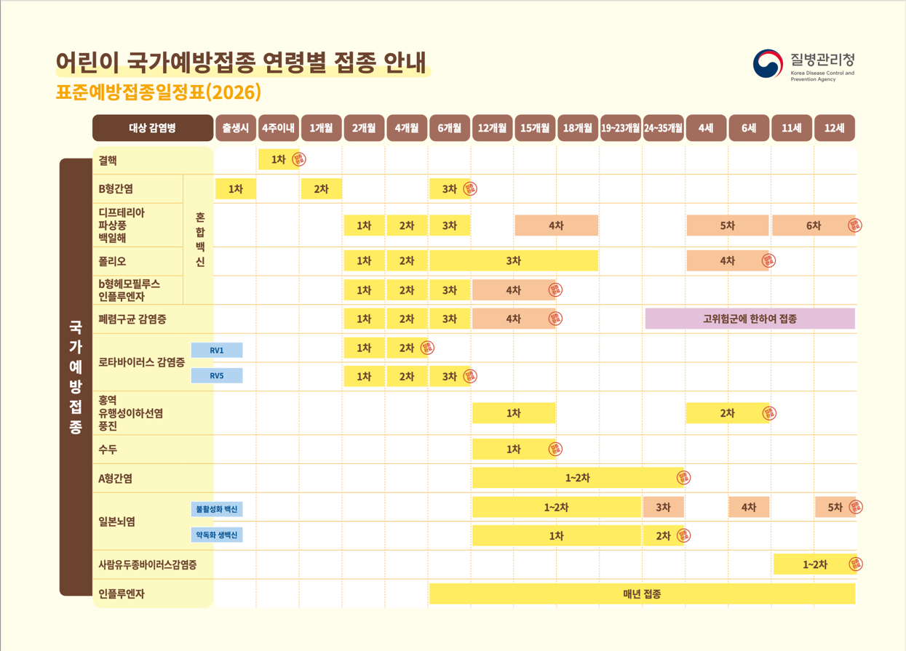
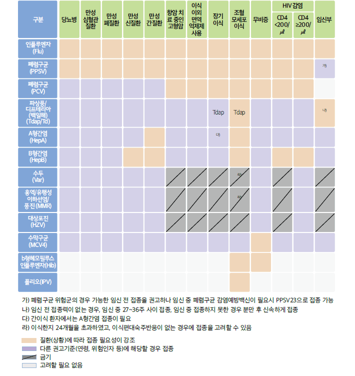
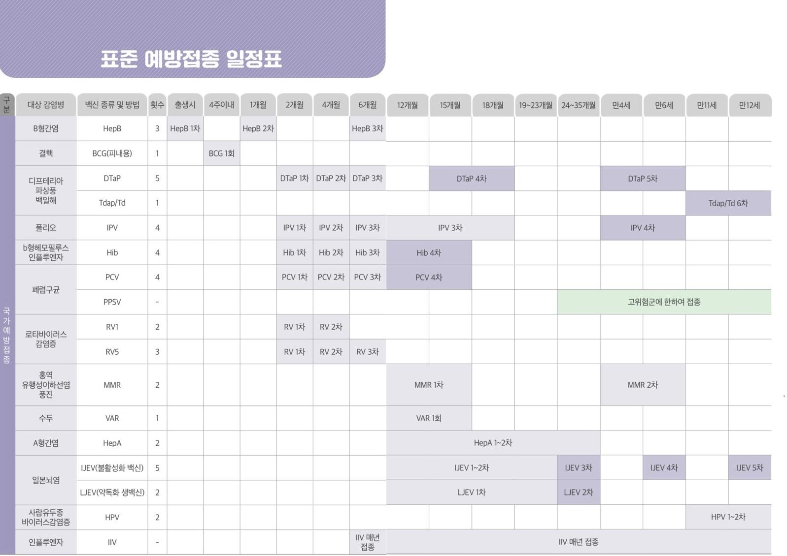
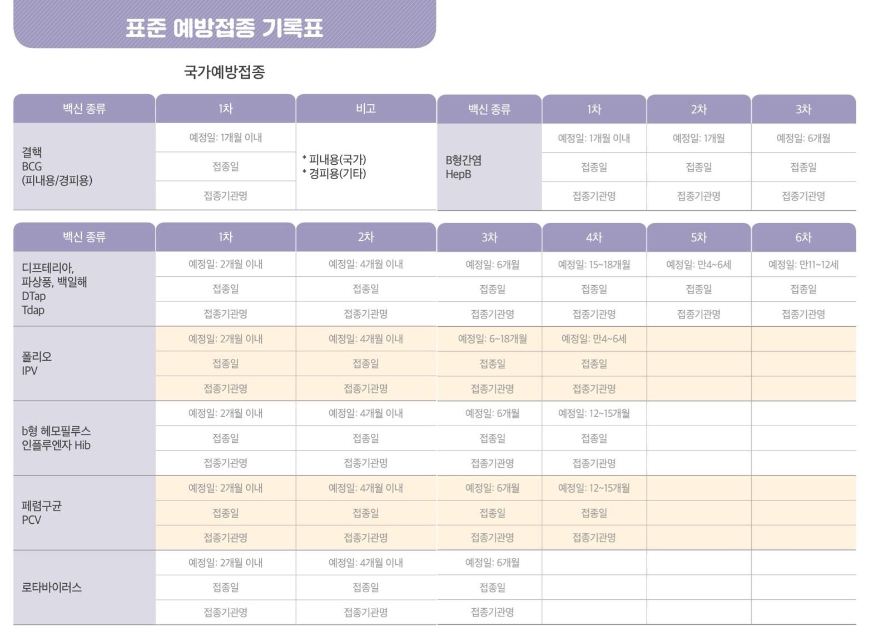

32. 예방접종
원인 | ||
소아 예방접종 |
| |
성인 예방접종 |
| |
기타 특수 상황 | 임신 중, 해외여행 예방접종 | |
평가목표 1) 연령 혹은 특수상황에 따라 예방접종 계획을 수립 2) 예방접종의 적응증과 금기사항 판단 3) 예방접종 후 주의사항과 이상반응 설명 | ||
구체적인 성과 | ||
병력 청취
| 예방접종력 확인 | 예방접종 수첩 / 제 때 다 맞았는지 |
| 연령/특수상황에 따라 예방접종의 적응증 확인 |  예방접종 0-4w :햅비 베이비 + 헵비 (HepB, BCG) 1m : 햅비(HepB) 2m : 패러디폴힘(폐렴구균, 로타, DTaP, 폴리오, 헤모필러스) 4m : 패러디폴힘 6m : 햅비패러디폴힘 12m : MR,폴일수두(MMR,폴리오,일본뇌염,수두), 푸하히(폴리, 폐렴구균, HepA, 헤모필러스) 24m : 일본 갈 애(일본뇌염, HepA)
 * 폐렴구균 감염 고위험군 1. 면역기능저하: HIV 감염증, 만성신부전/신증후군, 면역억제제나 방사선치료 하는 질환 (암, 백혈병, 림프종, 호치킨병), 고형장기 이식, 선천성 면역결핍질환 2. 무비증 (기능적 or 해부학적) 3. 면역 기능은 정상이나 다음 질환이 있음: 만성 심장/폐/간질환, 당뇨병, 뇌척수액 누출
* 무비증: 폐렴사슬알균 백신, b형 인플루엔자균 백신, 수막알균 백신 접종 필요 |
| 예방접종의 금기 | [예방접종 금기] 신경계질환, 경련 / 심질환, 선천기형 / 스테로이드 / 수혈 / 면역억제제 / 면역글로불린 / 계란, 항생제 알레르기 / 이전 접종 이상반응(부작용 – 발열, 경련, 아나필락시스)
[생백신 금기] 1개월 이내 예방접종 1개월 내 홍역, 볼거리, 풍진, 수두 걸린 적 / 그 외 전염병 면역결핍질환, 백혈병, 암 등으로 병원 치료
* 참고 로타바이러스: 장중첩증 과거력 시 금기 (재발 위험 ↑) |
| 고려사항 (접종지연 등) | [예방접종 보류] 열 / 질환 앓는 중 / 홍역, 볼거리, 수두 완치 2개월 내 / 면역억제치료 중 / 설사, 습진 등 전신 피부병 / 감마글로불린, 혈청주사, 수혈 후 3개월 이내 / 과거 예방주사로 인해 상태가 나빴던 경우 / 현재 진행 중인 신경계 질환
[생백신 지연 접종] 1. 면역글로불린: A형간염 3개월, 홍역 6개월, CMV 6개월 2. 특수 면역글로불린: 파상풍/B형간염 3개월, 수두 5개월 3. 정맥용 면역글로불린: 가와사키 11개월, ITP 8-11개월, 면역결핍치료: 8-11개월 4. 혈액제제: RBC 3개월, packed RBC 5개월, 전혈 6개월, 혈장/혈소판 제품 7개월 |
신체 진찰 | 활력징후 포함 건강상태 파악 | V/S 확인 구강: 혀, 침흘림 목: 경부 림프절 흉부: 호흡음/심음청진 |
| 소아의 성장 발달 상태 점검 | 신체 계측: 키, 체중, 두위, 대천문 크기 원시반사: 모로반사, 파악반사, 바빈스키 반사 등 |
치료 | 적절한 백신을 권장 접종방법에 따라 시행 | [접종 부위] 영아: 허벅지 전외측부 / 유아, 성인: 삼각근 [접종 간격] 동시 접종: 대부분 문제 없음. But 생백신을 나눠서 맞는 경우 최소 4주 이상 간격 |
| 접종 후 기록 | 예방수첩에 날짜, 병원 이름, 서명 기록 |
환자교육 | 주의사항, 이상반응, 향후 접종계획 | [주의사항, 이상반응] 1. 바로 가지 말고 30분간 병원에서 이상반응 관찰 2. 흔한 부작용: 통증, 붓기, 발적, 발열 -> 대개 알아서 사라짐 3. 응급: 심각한 전신증상 (전신 두드러기, 호흡곤란, 구토, 고열) 4. 생백신 예방접종 시 자연 감염과 유사한 증상 가능 -> 귀가 후 3시간 이상 주의깊게 관찰 5. 무리한 운동 X, 주사부위 감염되지 않게 목욕 X (간단한 샤워는 ok), 긁거나 만지지 않도록
[접종 지연 시 계획] 접종 지연 시 경과된 기간 상관없이 남은 접종 가능 -> 횟수가 중요, 늦어지는 건 문제 X -> but 접종간격이 최소 접종간격 이하로 짧아지면 안됨 -> 최소 간격 안 지켰으면 다시 접종 시작 |
만 14개월, 수두 2+0 / 인플루엔자 1+0 / 만 12개월 0+1 / 만 8개월 0+1 / 만 21개월 0+1 /
만 18개월, 인플루엔자 / 만 6세 2 / 만 15개월 1 / 4세 여아 1
손씻기/환자 확인/환자와 보호자의 관계 | |
인적사항 | 생년월일 (만 나이 확인 - 36개월 미만에서는 몇개월/몇주인지) |
수첩확인 | 어떤 예방접종에 대한 상담 받고 싶나요 예방접종 수첩 가져오셨나요 / 보여주세요 과거 예방접종 제 때 다 했나요 |
현재 상태 확인 | 지금 아픈 곳 열 / 기침, 가래 / 쌕쌕거림 (F CS W) |
성장/발달 출산력 | [주산기] 재태주수 / 자연vs제왕(이유) / 임신 시 어머니 나이 / 산전진찰 이상소견 / 임신 중 엽산, 철분제 복용 여부 / 임신 중 술, 담배, 커피 / 분만 중 문제 (엄마, 아이) / 출생 직후 문제 [검사] 신생아 대사이상검사 / 유전자검사 / 청력검사 -> 결과 [성장발달] 현재&출생 시 키, 체중, 머리둘레 / 1년동안 얼마나 컸나요 (4cm 이상?) / 발달(운적언사)/자폐 |
생백신 금기 | 1개월 이내 예방접종 1개월 내 홍역, 볼거리, 풍진, 수두 걸린 적 / 그 외 전염병 면역결핍질환, 백혈병, 암 등으로 병원 치료 |
백신 금기 | [신경] 신경계질환, 경련 [심장] 심질환, 선천기형 [면역억제] 스테로이드, 면역억제제 / [치료] 최근 수혈 / 면역글로불린 [알레르기] 계란, 항생제(네오마이신) 알레르기 이전 접종 이상반응(부작용 – 발열, 경련, 아나필락시스)
심신 계란 수혈 면역 이상 |
요약 | |
E | 건강검진 |
외 | 최근 입원 / 수술 |
과 | 출생 후 지금까지 아픈 적 / 진단받은 질병 |
약 | 복용 중인 약 |
사 | [보호자] 주양육자 (누구와 같이 사나요 / 누가 돌보나요) 식습관 (뭐 먹는지, 편식) / 운동 / 수면 해외여행 (최근/갈 계획) |
가 | 예방접종 이상반응 |
여 | 임신 중 (임신 시 생백신 불가) |
오늘 맞을 것 | 오늘 맞아야 하는 예방접종은 OO입니다. 병원에 오시는 것이 불편하지 않으시면 아이에게 부담이 되지 않도록 오늘은 OO과 XX를 맞고 다음달에 @@와 ##를 맞는 것이 어떨까요? * 생백신 나눠 맞을 거면 4주 간격 두기 | |
예방수첩 | 오늘 맞을 예방접종은 수첩에 적어드릴게요. 접종 날짜와 병원 이름, 서명까지 해서 드리겠습니다. | |
앞으로 맞을 것 | 다음에는 OO개월/년 뒤에 OO를 맞으면 됩니다. *지연 | |
이상반응 | 예방접종 맞고 바로 가지 말고 30분간 병원에서 이상반응 관찰, 3시간 집에서 면밀히 관찰, 3일 주의 | |
부작용 | 흔한 | 통증, 붓기, 발적, 발열, 보챔, 식욕부진 -> 대개 알아서 사라짐 |
| 응급 | 심각한 전신증상 (전신 두드러기, 호흡곤란, 구토, 고열) -> 바로 병원 |
주의사항 | [주의사항] 1. 생백신(약독화) 예방접종 시 자연 감염과 유사한 증상 가능 -> 귀가 후 3시간 이상 주의 깊게 관찰 2. 무리한 운동 X 3. 주사부위 감염되지 않게 목욕 X (간단한 샤워는 ok) 4. 긁거나 만지지 않도록
[접종 지연 시 계획] 접종 지연 시 경과된 기간 상관없이 남은 접종 가능 -> 횟수가 중요, 늦어지는 건 문제 X -> but 접종간격이 최소 접종간격 이하로 짧아지면 안됨, -> 최소 간격 안 지켰으면 다시 접종(너무 일찍 맞은 회차를 무효 처리하고, 잘못 맞은 날로부터 다시 최소 간격을 기다린 뒤 재접종)
달걀알러지 -> 요즘 잘 안생김 안심 ㅇㅇ 새로운 성분 ㄱㄱ 미열이나 콧물 등 애매한 증상 -> 백신의 금기에 해당하는 증상은 아니니 걱정마시고 맞고 가시면 되겠습니다. | |
마무리 | 궁금하신 것 있으신가요? | |

